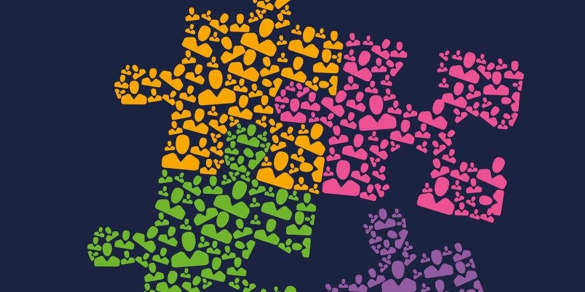

Together |
Community |
Belonging |
Contact |
|
As humans we have evolved the need to live in a group. We feel the need to be accepted by other people in the group and creating a sense of belonging is essential for it. Simply put, you feel a sense of belonging when you feel comfortable as part of a group. |
|
|
Belonging is a very broad term and is achieved in different ways depending on the person. The first step is to accept who you are. Lack of self-acceptance leads to loneliness, even when surrounded by lots of people. From that, start broadening your horizons. Get to know new people and challenge your ways of thinking. Take care of your relationships and look to make new ones. It’s a work in progress, so keep it up. |
 |
|
What can you do to improve your sense of belonging in your communities? It starts with the small things. Treat each other respectfully, listen to each other, talk to people you wouldn’t normally talk to. If you feel like someone is missing out, try to include them. Creating a sense of belonging is everyone’s responsibility for a healthy community. |